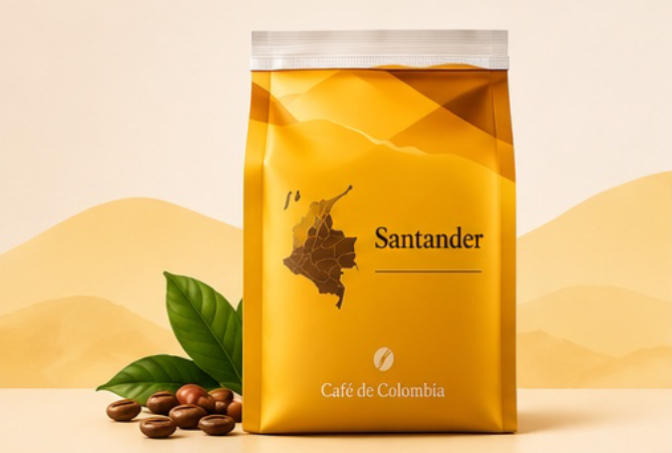
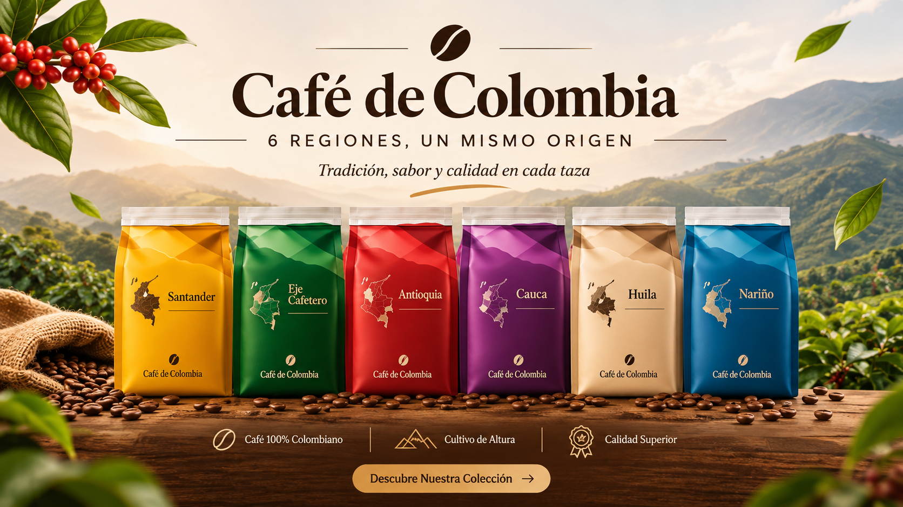
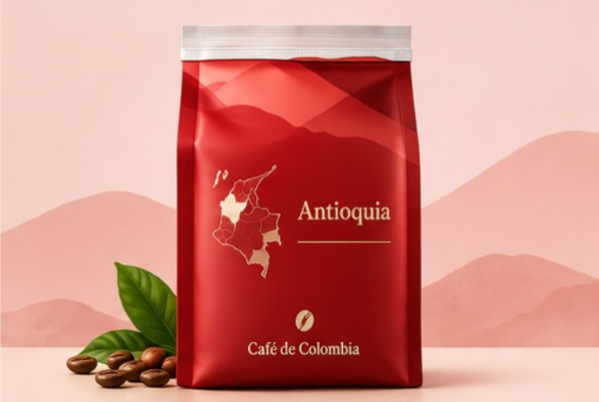
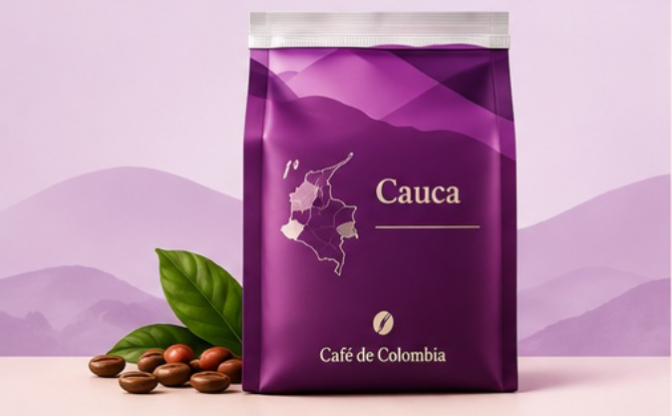
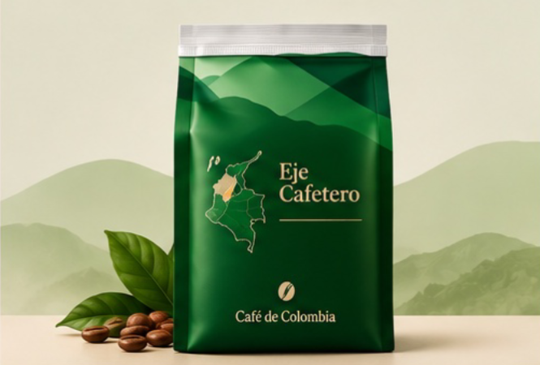
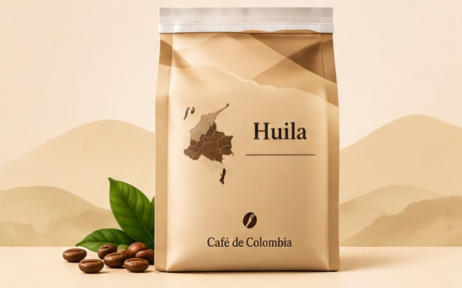
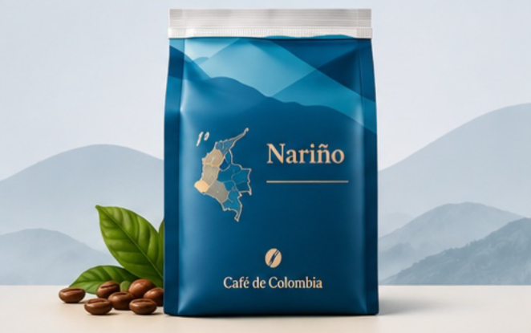

Santander
Notas a panela y frutos rojos. Acidez brillante.
$32.000 · 500 gTostamos granos de pequeños productores del Huila, Nariño y el Eje Cafetero. Del cultivo a tu taza en menos de un mes.
Ver productos

Notas a panela y frutos rojos. Acidez brillante.
$32.000 · 500 g
Cultivado a más de 2.000 m. Dulce y floral.
$35.000 · 500 g
El clásico colombiano: cuerpo medio y notas a chocolate.
$29.000 · 500 g
Cultivo orgánico. Notas a nuez y caramelo.
$34.000 · 500 g
Equilibrado, con notas cítricas y final largo.
$31.000 · 500 g
Bajo sombra. Suave, ideal para empezar el día.
$30.000 · 500 gCalle 85 # 12-34, Bogotá
Lunes a sábado, 7:00 a. m. – 8:00 p. m.